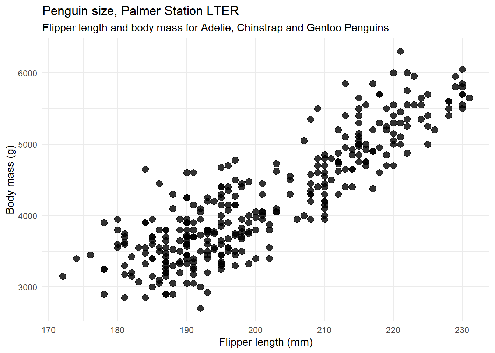
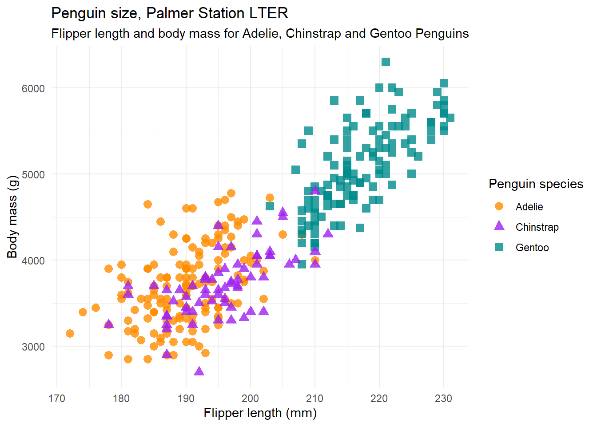
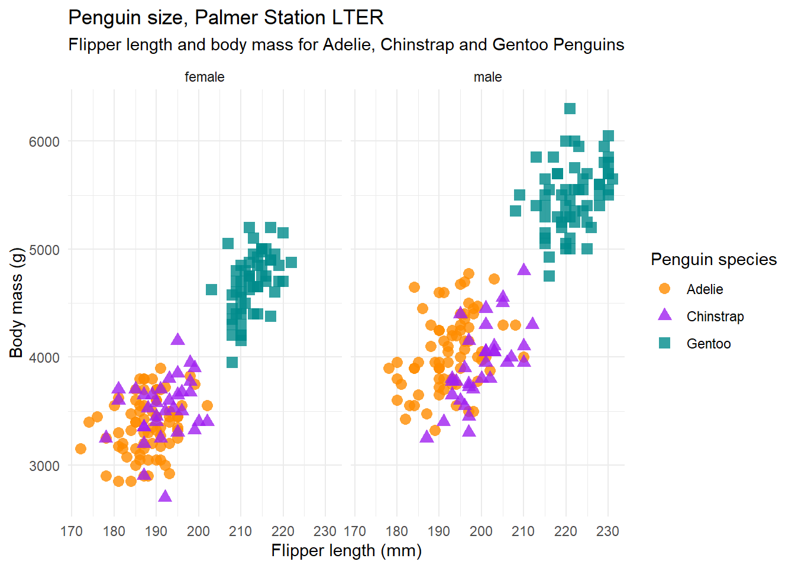

Code
library(tidyverse)
penguins <- read_csv('https://raw.githubusercontent.com/rfordatascience/tidytuesday/master/data/2020/2020-07-28/penguins.csv') %>%
drop_na()As everyone always says,
penguins are very cute!
…so let’s work with penguin data today.
Note that the palmerpenguins dataset is meant as an alternative to the commonly used iris data.
More information on this data set is available on Allison Horst’s Github page.
Data were collected and made available by Dr. Kristen Gorman and the Palmer Station, Antarctica LTER, a member of the Long Term Ecological Research Network.
This data can also be used via the {palmerpenguins} package (Horst et al., 2020) and was originally introduced in Gorman et al. (2014)
First, we need to:
1. load packages
2. read in data
3. check if that data is in the right format
This same dataset is also available in the package palmerpenguins.
library(tidyverse)
penguins <- read_csv('https://raw.githubusercontent.com/rfordatascience/tidytuesday/master/data/2020/2020-07-28/penguins.csv') %>%
drop_na()# A tibble: 6 x 8
species island bill_length_mm bill_depth_mm flipper_length_~ body_mass_g sex
<chr> <chr> <dbl> <dbl> <dbl> <dbl> <chr>
1 Adelie Torge~ 39.1 18.7 181 3750 male
2 Adelie Torge~ 39.5 17.4 186 3800 fema~
3 Adelie Torge~ 40.3 18 195 3250 fema~
4 Adelie Torge~ 36.7 19.3 193 3450 fema~
5 Adelie Torge~ 39.3 20.6 190 3650 male
6 Adelie Torge~ 38.9 17.8 181 3625 fema~
# ... with 1 more variable: year <dbl>We’ve removed missing values here, which means that the data has 333 rows now1.


The average bill length is 43.9927928 mm and the average bill depth is 17.1648649 mm.
The data was collected between 2007 and 2009.
Here’s code to see data in a specific column:
penguins$bill_length_mmpenguins %>% select(bill_length_mm)Some ideas for graphs:
The following graphs are slightly simplified versions from the vignette for the {palmerpenguins} package.
mass_flipper <- ggplot(data = penguins,
aes(x = flipper_length_mm,
y = body_mass_g)) +
geom_point(size = 3,
alpha = 0.8) +
theme_minimal() +
labs(title = "Penguin size, Palmer Station LTER",
subtitle = "Flipper length and body mass for Adelie, Chinstrap and Gentoo Penguins",
x = "Flipper length (mm)",
y = "Body mass (g)") +
theme_minimal()
mass_flipper
Refer to Figure 2 for an explanation of the measurements.
mass_flipper_species <- ggplot(data = penguins,
aes(x = flipper_length_mm,
y = body_mass_g)) +
geom_point(aes(color = species,
shape = species),
size = 3,
alpha = 0.8) +
theme_minimal() +
scale_color_manual(values = c("darkorange","purple","cyan4")) +
labs(title = "Penguin size, Palmer Station LTER",
subtitle = "Flipper length and body mass for Adelie, Chinstrap and Gentoo Penguins",
x = "Flipper length (mm)",
y = "Body mass (g)",
color = "Penguin species",
shape = "Penguin species") +
theme_minimal()
mass_flipper_species
Figure 3 does not separate the data by species, while Figure 4 does.
mass_flipper_species +
facet_wrap(~sex)
Note that this removes any rows with missing values!↩︎